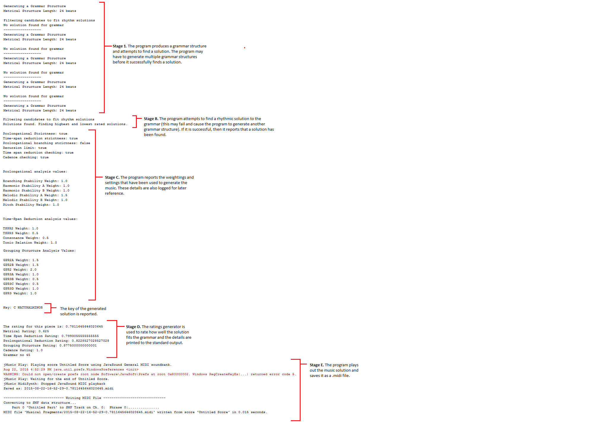
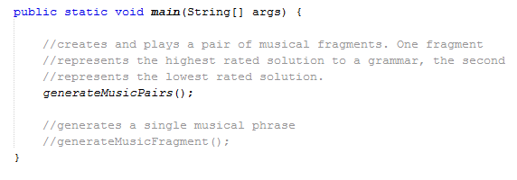
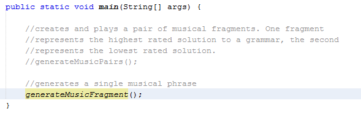

This document provides an overview of running the program.
The program has been coded using the JAVA language and requires JRE 7 or higher to run. At present there is no front-end GUI.
The program comes as a NetBeans project and can be opened and run using the NetBeans IDE.
The files are given the following naming format:
year-month-day-hours-minutes-seconds-overallrating.midi (yyyy-mm-dd-hh-mm-ss-overallrating.midi)
This image shows the typical output of the system:
The program can be adjusted to generate a musical fragment, rather than a pair of musical fragments. In generating a musical fragment the program will pick a solution at random from the list of solutions rather than picking the highest rated and lowest rated solutions.
In order to generate one musical fragment, the main method of the Main class needs to be adjusted.
At present, the main method looks like this:
This code needs to be adjusted by commenting out the 'generateMusicPairs()' method and uncommenting the 'generateMusicFragment()' method. The code should look like this after editing:
The program can be run as before. In this case, the program will not save the solution as a .midi file.
{kind=link}